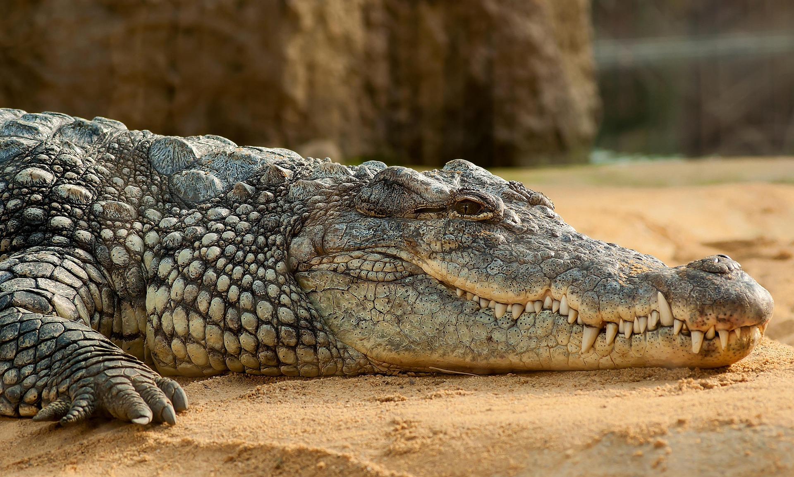

Cocodrilo (Crocodylidae)

Los cocodrilos son reptiles semiacu ticos que habitan en zonas tropicales, prefiriendo pantanos, rios, lagos y manglares de agua dulce o salobre. Son depredadores solitarios y
territoriales que pasan el d a tomando el sol para regular su temperatura o acechando presas en el agua, destacando por su gran mordida y nado gil.
H bitat:
Zonas: Pantanos, r os de corriente lenta, lagos, manglares y estuarios en regiones tropicales de frica, Asia, America y Australia.
Agua: Prefieren agua dulce o salobre, aunque especies como el cocodrilo marino toleran la salinidad y pueden adentrarse en el mar.
Entorno: Necesitan bancos de arena o lodo para asolearse y regular su temperatura corporal.
Estilo de Vida:
Comportamiento: Son principalmente solitarios y territoriales.
Caza: Depredadores de emboscada, esperan parados con solo ojos y nariz fuera del agua para atacar por sorpresa a presas vertebradas.
Termorregulaci n: Al ser de sangre fr a, alternan entre sumergirse para enfriarse y tomar el sol en la orilla para calentarse.
Reproducci n: Oviparos; las hembras construyen nidos y cuidan a las crias tras la eclosion.
Actividad: Suelen ser m s activos durante la noche.
Son animales longevos, con especies capaces de vivir entre 50 y 80 años.
- Adaptaci n semiacu tica: Tienen los ojos, o dos y fosas nasales en la parte superior de la cabeza, lo que les permite respirar y ver casi totalmente sumergidos.
- Mordida potente y dientes: Poseen la fuerza de mordida m s fuerte del reino animal, con dientes dise ados para atrapar y desgarrar, capaces de reemplazar hasta 50 veces a lo largo de su vida.
- Cuerpo y piel escamosa: Cuentan con una piel gruesa compuesta por escamas (osteodermos) que act an como armadura, y una cola larga y poderosa que les permite nadar a velocidades superiores a 30 km/h.
- Depredadores de metabolismo lento: Son carn voros que suelen esperar a sus presas en el agua, capaces de pasar meses sin comer gracias a su lento metabolismo.
- Reproducci n y comportamiento: Son animales ov paros que entierran sus huevos, y la temperatura del nido determina el sexo de las crias. Ademas, suelen regular su temperatura asole ndose o abriendo la boca para refrescarse.
cocodrilo